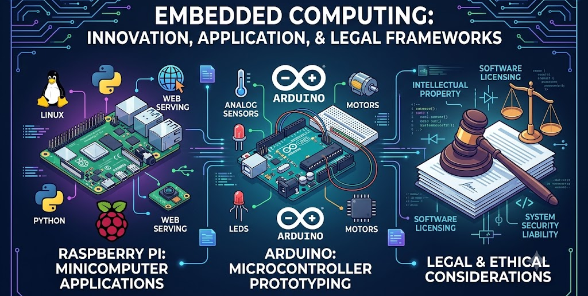

Embedded Computing
Microcontrollers, IoT, and the software inside everyday devices — explored through forensic audits of real-world embedded system failures.
Units
All 9 units are rebuilt here.
Year-Long Pacing Guide
A 36-week plan (two 18-week semesters). Each unit ends with a Unit Test and a Google Site Check on the same day. Weeks are a target — build days sometimes run long, so expect small shifts.
Semester 1
- 1.1 What Is an Embedded System?
- 1.2 Intro to Forensic Auditing
- 1.2 (Day 2) First Forensic Audit
- 1.3 Embedded Systems All Around Us
- 1.4 Take a Stand: GPS Ankle Monitor Failures
- 1.5 Smart City Simulator
- 1.6 The Double Life of a Raspberry Pi
- Unit 1 Study Guide
- 1.8 Unit 1 Test
- 2.1 Meet the Arduino
- 2.2 TinkerCAD Setup and First Circuit
- 2.3 Your First Sketch: Blink
- 2.4 Variables and Data Types
- 2.5 PWM: Controlling Brightness
- 2.6 Timing and Sequences
- 2.7 Circuit Fundamentals
- 2.8 Interpreted vs Compiled
- 2.9 Unit Build: Traffic Light
- 3.1 RGB LEDs and Color Mixing
- 3.2 Buzzer: Tones and Melodies
- 3.3 Servo: Angles and Sweeps
- 3.4 DC Motor + Transistor
- 3.5 Displays: 7-Segment Counter
- 3.6 Inputs Drive Outputs
- 3.7 Code Toolkit: Functions and Arrays
- 3.8 Test and Debug
- 3.9 Unit Build: Your Own Machine
- 4.1 Hello World
- 4.2 Variables
- 4.3 Conditionals & Logic
- 4.4 Loops
- 4.5 Loops Challenge Project
- 5.1 Vectors
- 5.2 Functions
- 5.3 Functions Challenge Project
- 6.1 Classes & Objects
- 6.2 References & Pointers
Semester 2
- 7.1 Intro to Python with Tracy the Turtle
- 7.2 Tracy's Grid World
- 7.3 Turning Tracy
- 7.4 Turning Tracy Using Angles
- 7.5 Comments
- 7.6 Naming Guidelines
- 7.7 Artistic Effects
- 7.8 Top Down Design
- 8.1 Printing in Python
- 8.2 Variables and Types
- 8.3 User Input
- 8.4 Mathematical Operators
- 8.5 String Operators
- 8.6 Comments
- 8.7 Quiz
- 9.1 Booleans
- 9.2 If Statements
- 9.3 Comparison Operators
- 9.4 Logical Operators
- 9.5 Floating Point Numbers and Rounding
- 9.6 Quiz
- 10.1 While Loops
- 10.2 For Loops
- 10.3 Break and Continue
- 10.4 Nested Control Structures
- 10.5 Quiz
- 11.1 Functions
- 11.2 Functions and Parameters
- 11.3 Namespaces in Functions
- 11.4 Functions and Return Values
- 11.5 Exceptions
- 11.6 Quiz
- 12.1 Loops (Servo)
- 12.2 If/Else Statements (Buttons)
- 12.3 Arithmetic, Comparison, and Logical Operators (Ultrasonic Sensor)
- 12.4 Functions (More Sensors)
- 12.5 Using Motors
- 12.6 Quiz
- 13.1 Arduino Challenges (Digital Watch & Elevator)
- 13.2 Explore a New Sensor
- 13.3 Step-by-Step Arduino Project
- 13.4 Final Project
- 14.1 Indexing
- 14.2 Slicing
- 14.3 Immutability
- 14.4 Strings and For Loops
- 14.5 The in Keyword
- 14.6 String Methods
- 14.7 Quiz
- 15.1 Tuples
- 15.2 Lists
- 15.3 For Loops and Lists
- 15.4 List Methods
- 15.5 Quiz
- 16.1 2D Lists
- 16.2 List Comprehensions
- 16.3 Packing and Unpacking
- 16.4 Dictionaries
- 16.5 Equivalence vs. Identity
- 16.6 Quiz
- 17.1 Project: Guess the Word
- 17.2 Intro to Computer Science in Python Completed
Course Syllabus
Georgia Embedded Computing · Course 11.42700 · Social Circle High School · Mr. Norman · 2026–2027
Course Description
Embedded Computing is a third-level course in the Internet of Things pathway. Everything is built in simulation — Tinkercad for circuits — since physical Arduino hardware can no longer run on school Chromebooks. Unit 1 investigates real crimes, disasters, and engineering failures caused by embedded technology. Units 2 and 3 build working circuits in Tinkercad, from your first blinking LED to your own light/sound/motion machine. From there the year moves into programming depth: C++ in Codecademy (Units 4–6), then a full Python course paired with more Tinkercad circuit work in CodeHS (Units 7–18), ending in a CodeHS final exam. By the end of the year you will have written code in three languages and built more than a dozen circuits, entirely in simulation.
Your Four Ongoing Responsibilities
Three of these are living records you maintain all year. The fourth, Forensics Report, is concentrated in Unit 1, the only unit built around real-world case studies — the rest of the year is Tinkercad builds and Codecademy/CodeHS coursework.
1. Developer Log
A Google Doc you write in during the last 5 minutes of every class. Learning days: what you learned, what surprised you, what you still wonder. Build days: what you built, what worked, what didn’t, what’s next.
Specific, honest entries count. “It kind of worked” does not. Spot-checked at every site check.
2. Build Post
A short, visual entry on your Google Site every time you finish a build or a platform project: a screenshot plus 2–3 sentences on what it does and how it works. This covers Tinkercad circuits (Units 1–3, 12–13) and Codecademy/CodeHS code projects (Units 4–11, 14–18) alike.
Posted the same day you finish, not on test day.
3. Forensics Report
A structured 8-section analysis of a real crime, disaster, or engineering failure involving embedded technology. You’ll write two this year, both in Unit 1: the Therac-25 and the GPS ankle monitor failures.
Format: Google Doc or Google Slides. Surface-level summaries do not earn full credit.
4. Living Glossary
A running vocabulary table you add to every lesson — embedded-systems terms early in the year, then C++ and Python terms once Units 4 and 7 start. Each term gets five columns: the AI’s definition, your own definition, a real-life example, a photo, and your comfort rating (1–5).
Checked at every site check for new terms.
Your Google Site
Your public portfolio for the course. It holds three sections:
- About Me — your intro and photo, a resume (created in the course and updated at the end of the year), a running Careers in Embedded Computing list (one new career every unit), and your Living Glossary.
- My Builds — one page per unit with every build or project, a screenshot, and a write-up.
- Extra Credit — only filled in if you complete Beyond the Build activities.
If your site is unreachable on site-check day, the whole check scores 0. Keep it published.
Submitting Work
- Units 1–3: assignments are submitted through Google Classroom, using the links posted on each lesson page here.
- Units 4–6: completed and auto-graded inside Codecademy (Learn C++ course) — each lesson page here names the exact module.
- Units 7–18: completed inside CodeHS (Intro to Programming in Python with Arduino course) — each lesson page here names the exact lesson.
- Developer Log, Build Post, Forensics Report, and Living Glossary entries go on your Google Site regardless of unit.
- Everything is due Friday at 11:59 pm of the week it is assigned.
- Google Doc/Slides work: set sharing to “Anyone with the link can view.” A link that won’t open is returned ungraded.
- Missing an assignment? Report it on the Late Work page.
Grading
| Assessment | Points | When |
|---|---|---|
| Unit Test | 100 | End of Units 1, 2, and 3 |
| Codecademy / CodeHS Module Grade | Per module | Units 4–18 — Codecademy quizzes are a Classroom grade; CodeHS work is graded by hand from what you paste into CodeHS |
| Google Site Check | Starts at 50, grows 5 points each check | End of Units 1, 2, 3, 6, 13, and 18 |
| Final Project | 100 | Unit 13 — CodeHS’s open Advanced Arduino final project |
| Final Exam | 100 | Unit 18 — CodeHS’s final exam |
| Forensics Reports | Per assignment | Unit 1 only, due Friday 11:59 pm |
The site check grows because your site does: by each check you have a page for every unit so far, a growing career list, a growing glossary, an updated resume, and a growing run of Developer Log entries.
Extra credit: +5 points per Beyond the Build entry on your site, up to +10 per unit.
What You Do Every Day
- Every class: Developer Log entry in the last 5 minutes; add new vocabulary to your Living Glossary.
- Build days (Units 1–3, 12–13): add a screenshot and 2–3 sentences to your current unit’s My Builds page.
- Codecademy/CodeHS days (Units 4–11, 14–18): complete the module or lesson named on the site's assignment line, then post a Build Post when you finish a project.
- Case-study days (Unit 1 only): Forensics Report, due Friday 11:59 pm.
📄 Full Student Course Guide 📄 Class Docs & Forensic Report Resources